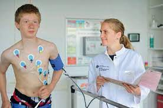
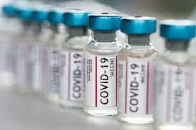

Arztpraxis S & U  Gesund im nu!
Gesund im nu!
Dienstleistungen:
In unserer Praxis bieten wir die unten stehenden Ärztlichen Leistungen an, damit sie im nu wieder gesund sind:
Sportmedizin:
- Laktatleistungsdiagnostik - empfohlenes Untersuchungszentrum der DOSB
- individuelle Trainingsberatung mit Besprechung Laktatkurve
- gesamte sportmedizinische Leistungsdiagnostik kardiopulmonal - Feldtest
- Medizinische Trainingstherapie und im angeschlossenen Sportzentrum
Akupunktur:
- Traditionelle TCM Diagnostik mit Puls- und Zungendiagnose
- Ohrakupunktur und Elektroakupunktur
- Mitglied der Prüfungskommision "Akupunktur" der Ärztekammer Südwürttemberg
Corona Impfungen:
- Biontech
- Moderna
- Astra Zeneca